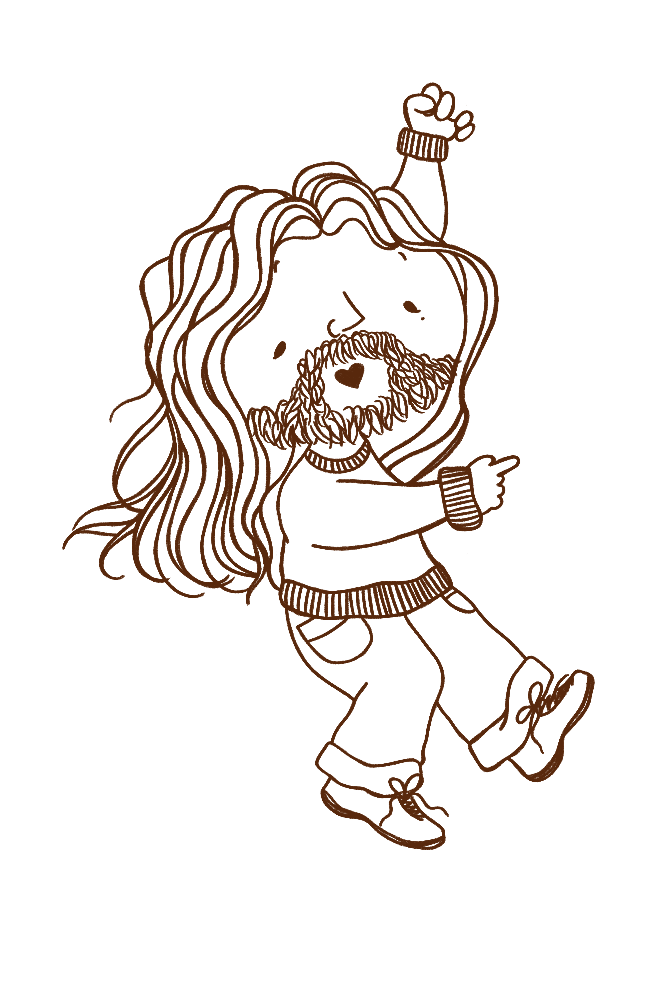

I am a self taught engineer interested in low-level programming, especially for video games. I like to make and use simple software written in languages like C. See my work.
As the system administrator for a national-scale business, I learn new skills everyday related to project, process, and people management. The role has taught me that business and engineering are two sides of the same coin, involving equal parts art and compromise. Learn more about me.
I deeply believe in the power of games as an art form. At their best, they meaningfully reflect fundamental patterns of existence. I want my work to live up to this ideal and influence others to do the same. Read my blog >
My work
Crumble King
An arcade platformer about eating food, crumbling tiles, and avoiding guards. github itch.io
Cicero
A low level, compiled language currently being written in C as a learning project. github
Pigeon
An experimental communications platform written in Go based on artificially delayed messaging. github visit site
Pathtracer
A pathtraced renderer running on the CPU. Written as a learning project with plans to expand. github